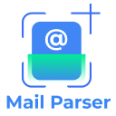

About Mail Parser
Mail Parser is a user-friendly application designed to enhance user's online experience. Our app allows users to parse their mail and send the mail data to their endpoint/webhook.
This application saves users time and resources by notifying them about their important mails so that they don't miss any important update.
In our application, the user can add the email id or the domain of their important source of email to get updated about receiving mail from those important senders. Then the whole content of the mail will be sent and displayed on the webbook or respective endpoint. We track your mail and notify you with the data of the mail to your endpoint or webhook provided by you, whenever the new mail from your whitelisted domain or email has received.
We understand the importance of user data privacy and security, and we take all necessary measures to ensure that our users' data is safe and protected at all times. We never share data to third party or save the data in our database .Our application just directly parse data and send to your endpoint.
Advantages
- Save users time – Our application save users time by displaying all their important mails as one place. So the user need not have to constantly keep check on gmail. .
- Continuous parsing – The application will continuos parse the mail box and notify the user about the same.
- Never miss important update - The user need not to check their mail box frequently to check for an important update. Our application will keep track of all the mails coming from whitelisted mail ids or domain and directly sent it to their specified webbook. SO the user need not to keep their gmail open all the time.
- Data privacy – We don’t store user data in any database. So the privacy and security of the users’ data will be maintained.
Features
- Mail Parsing.
- User can define from which domain or email, mail need to be parsed.
- User driven as the whole control is in the hands of the user to choose their whitelist emails and endpoint.
- There is no involvement of any third party for any task.
- All the setting are fixed by the user only. No default setting is used.
- Privacy and security our first priority
- Ease of use
- Our app functionality will enhance user experience and help to get the mail on time
Privacy Policy
We take your privacy seriously. Our Privacy Policy explains how we collect, use, store, and share your data. We only access and use data that is necessary for the functioning of our app. We never collect user data.
You can read our full Privacy Policy here.
What our app will do with user data?
We understand the importance of user data privacy and security, and we take all necessary measures to ensure that our users' data is safe and protected at all times. We never share data to third party or save the data in our database .Our app just directly parse data and send to your endpoint. We don't do anything with the user data.
How it will be helpfull to a bussiness man?
It will manage your gmail and notify you whenever important mail arrives, with the data. So, no need to waste resources for checking for important mails in your gmail. We will handle it you focus on your other tasks. It will save your resources and time.
How easy it will be to use?
It is very easy to use only you want to do just install it and set up the setting page with your important mails and domains on which you want our app to keep eye. And where you want notification and data of your mail you want to specify it then click save&start. Rest we will handle.